A. Structural clustering zoo
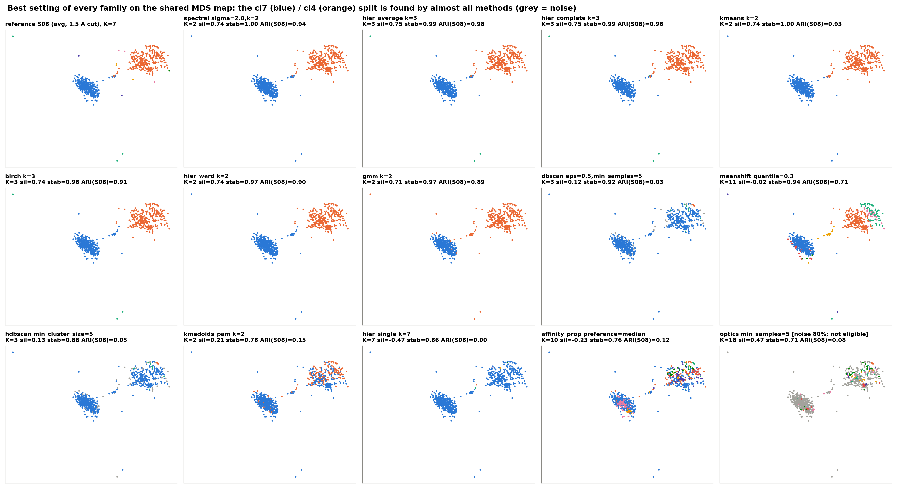
17 of 76 runs with >=2 clusters reproduce the cl7/cl4 split with ARI > 0.9 on the 774 main-cluster chains.
Shows: best setting of each method family drawn on the shared metric-MDS map, colours matched to S08 | Data: results/ext/zoo_labels.csv, results/ext/embedding_rmsd.csv | Script: scripts/ext_zoo.py
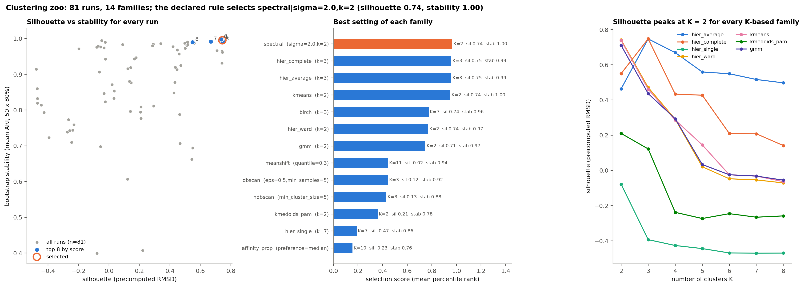
Selected by the declared rule: spectral|sigma=2.0,k=2 (K=2, silhouette 0.74, stability ARI 1.00); 4 of the top 10 runs have K=2.
Shows: silhouette vs bootstrap stability for all runs, best setting per family, silhouette vs K | Data: results/ext/zoo_runs.csv, results/ext/zoo_ranking.csv | Script: scripts/ext_zoo.py
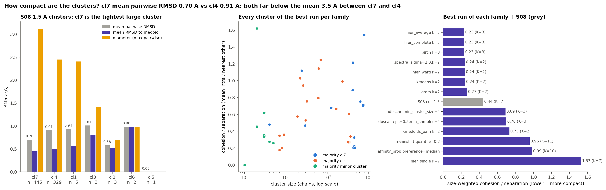
cl7 (n=445) has mean intra RMSD 0.70 A and diameter 3.1 A, cl4 (n=329) 0.91 A / 2.4 A; cohesion/separation 0.33 vs 0.61.
Shows: mean intra RMSD / medoid radius / diameter for S08 clusters; cohesion-separation per cluster and per run | Data: results/ext/zoo_compactness.csv, results/ext/zoo_compactness_runs.csv | Script: scripts/ext_compactness.py
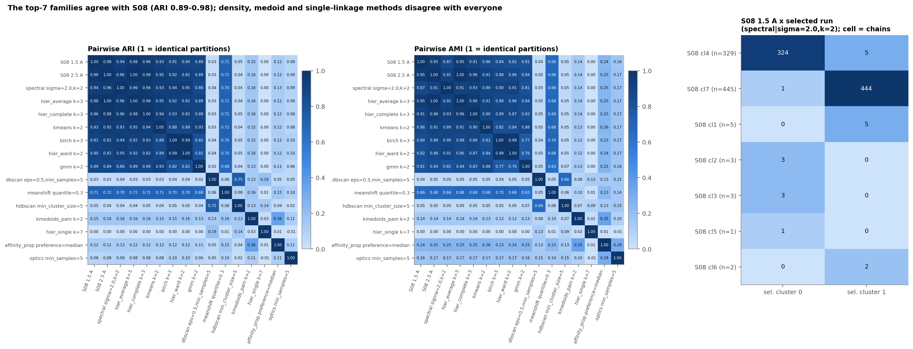
The selected run (spectral|sigma=2.0,k=2) puts the 445 cl7 and 329 cl4 chains in separate clusters and absorbs the 14 minor-cluster chains; top-family ARI vs S08 0.89-0.98.
Shows: ARI and AMI between the best run of every family and S08; contingency S08 x selected run | Data: results/ext/zoo_agreement.csv, results/ext/zoo_labels.csv | Script: scripts/ext_agreement.py
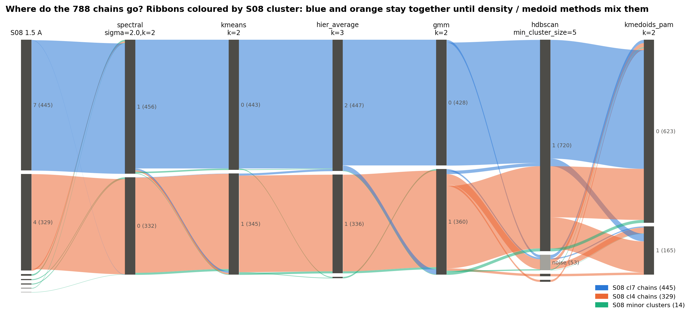
The cl7/cl4 ribbons stay separate through spectral, k-means, average linkage and GMM; HDBSCAN and PAM merge or interleave them.
Shows: alluvial of chain membership from S08 through the selected run and four other methods | Data: results/ext/zoo_labels.csv | Script: scripts/ext_agreement.py
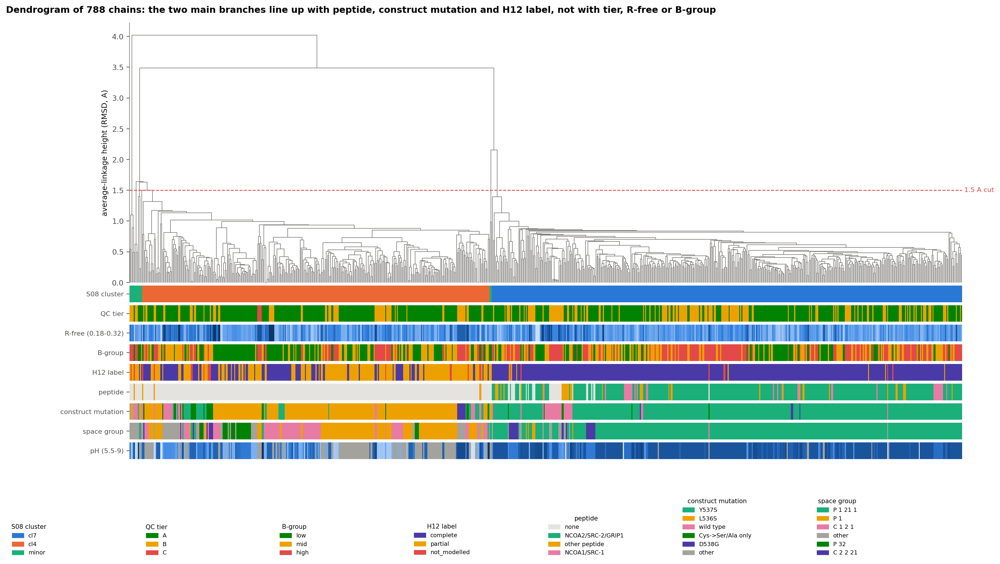
The cl7/cl4 branches coincide with coactivator peptide (present/absent), Y537S vs L536S constructs and complete vs partial H12, while quality bars (tier, R-free, B-group) are mixed along both branches.
Shows: S08 average-linkage dendrogram (788 leaves) with nine metadata colour bars | Data: results/linkage_entry.npy, results/ext/chain_metadata.csv, results/ext/leaf_order.csv | Script: scripts/ext_dendrogram.py
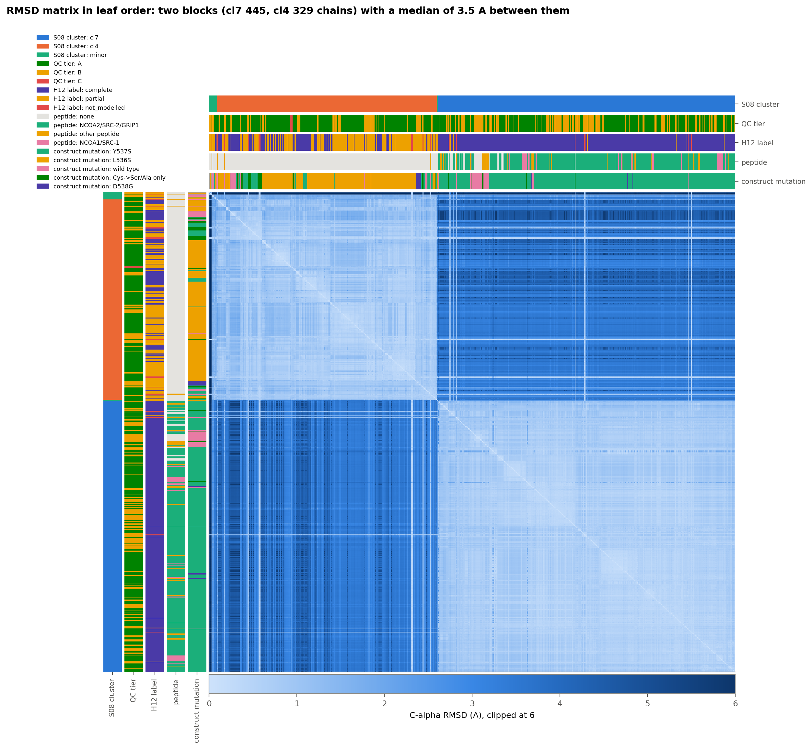
Two dark diagonal blocks; the cl4 block has visible sub-blocks (more internal heterogeneity) and the off-diagonal is uniformly ~3.5 A.
Shows: 788 x 788 RMSD heatmap ordered by dendrogram leaves with cluster, tier, H12, peptide and mutation sidebars | Data: results/rmsd_entry.npy, results/ext/leaf_order.csv | Script: scripts/ext_dendrogram.py
B. Chemistry clustering
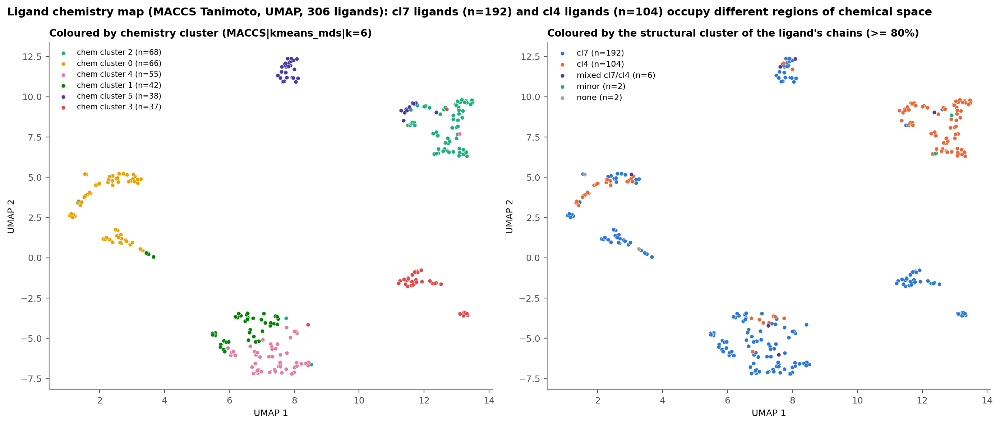
192 ligands sit only in cl7 chains and 104 only in cl4 chains; see Y25 for the formal test.
Shows: UMAP of the ligand Tanimoto distance coloured by chemistry cluster and by structural cluster | Data: results/ext/chem_labels_best.csv, results/ext/chem_umap.csv | Script: scripts/ext_chem_zoo.py
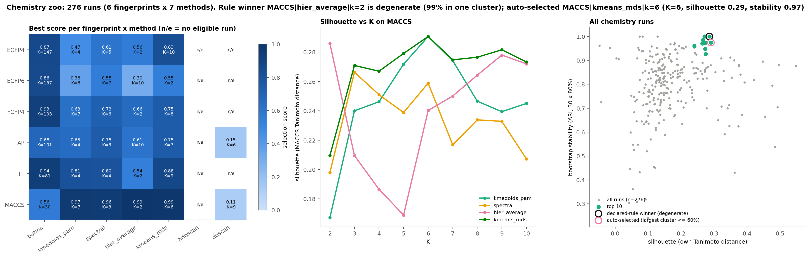
The declared rule selects MACCS|hier_average|k=2 (K=2, largest cluster 99%); requiring a largest cluster <= 60% gives MACCS|kmeans_mds|k=6 (K=6). Chemistry silhouettes stay modest (0.29 max).
Shows: selection score per fingerprint x method, silhouette vs K on the chosen fingerprint, silhouette vs stability | Data: results/ext/chem_zoo_runs.csv, results/ext/chem_zoo_ranking.csv | Script: scripts/ext_chem_zoo.py
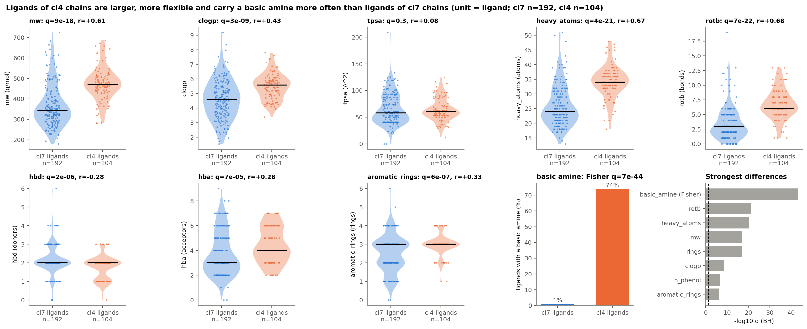
Median MW 470 vs 344 g/mol (cl4 vs cl7, q=9e-18); basic amine in 74% of cl4 vs 1% of cl7 ligands (q=7e-44).
Shows: physchem descriptor distributions of cl7-only vs cl4-only ligands with Mann-Whitney / Fisher BH q | Data: results/ext/ligand_descriptors.csv, results/ext/ligand_descriptor_tests.csv | Script: scripts/ext_ligand_descriptors.py
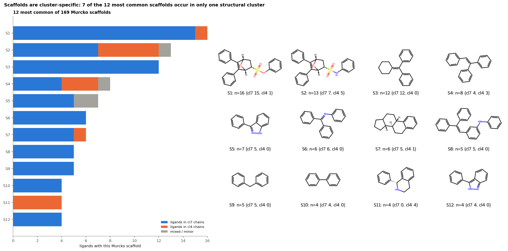
7/12 top scaffolds are confined to one structural cluster; 169 distinct scaffolds in 306 ligands.
Shows: 12 most common Murcko scaffolds, counts split by the structural cluster of the ligand's chains | Data: results/ext/ligand_descriptors.csv, results/ext/ligand_top_scaffolds.csv | Script: scripts/ext_ligand_descriptors.py
C. Why two clusters
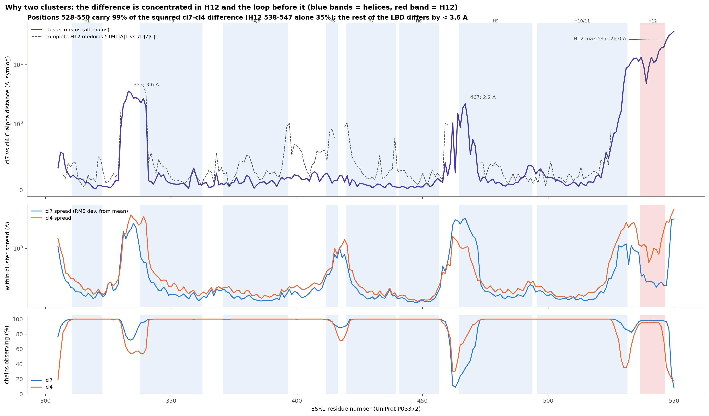
Largest shifts at 550, 549, 548 (36.9 A max); positions 528-550 hold 99% of the squared difference; cl4 chains observe H12 less often (86% vs 98%).
Shows: per-residue distance between cl7 and cl4 mean C-alpha positions and medoids, within-cluster spread, observation rate | Data: results/ext/cluster_displacement_profile.csv | Script: scripts/ext_displacement_profile.py
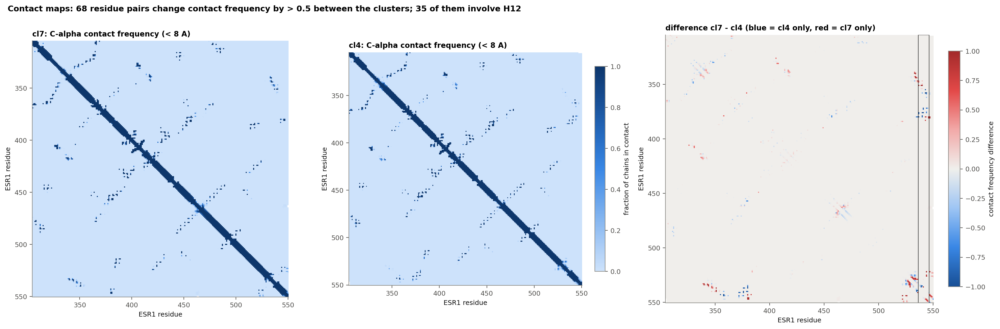
68 residue pairs differ by > 0.5 in contact frequency; 35 involve H12 (H12 packs on H3/H11 in cl7 and on H3/H5 in the AF-2 groove in cl4).
Shows: C-alpha contact-frequency maps of cl7 and cl4 and their difference | Data: results/ext/contact_freq_diff.npy, results/ext/structural_features.csv | Script: scripts/ext_structural_features.py
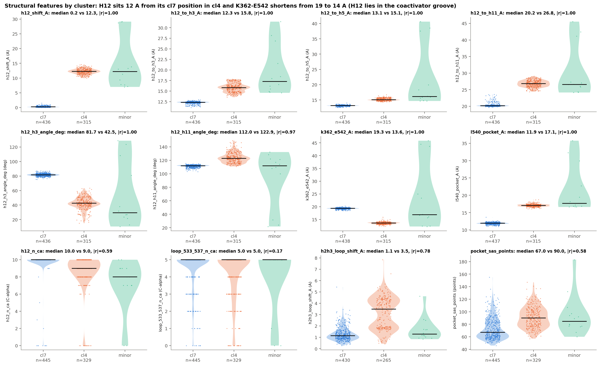
H12-H3 angle 82 vs 43 deg, H12-H11 distance 20.2 vs 26.8 A; pocket size and the H2-H3 loop differ less (|r| 0.58, 0.78).
Shows: 12 per-chain structural features (H12 geometry, helix angles, charge clamp, pocket and ligand size) by cluster | Data: results/ext/structural_features.csv, results/ext/structural_feature_tests.csv | Script: scripts/ext_structural_features.py
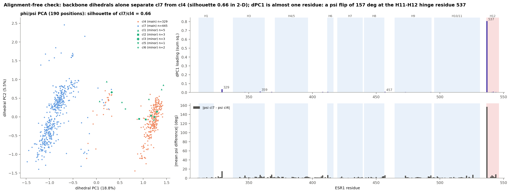
dPC1 explains 19% of dihedral variance; largest loadings at 537, 329, 359, 457; cl7/cl4 silhouette 0.66 without any superposition.
Shows: PCA of circular-encoded phi/psi over positions observed in >= 90% of chains; dPC1 loadings and mean psi differences along the sequence | Data: results/ext/phipsi_pca.csv, results/ext/phipsi_loadings.csv | Script: scripts/ext_phipsi.py
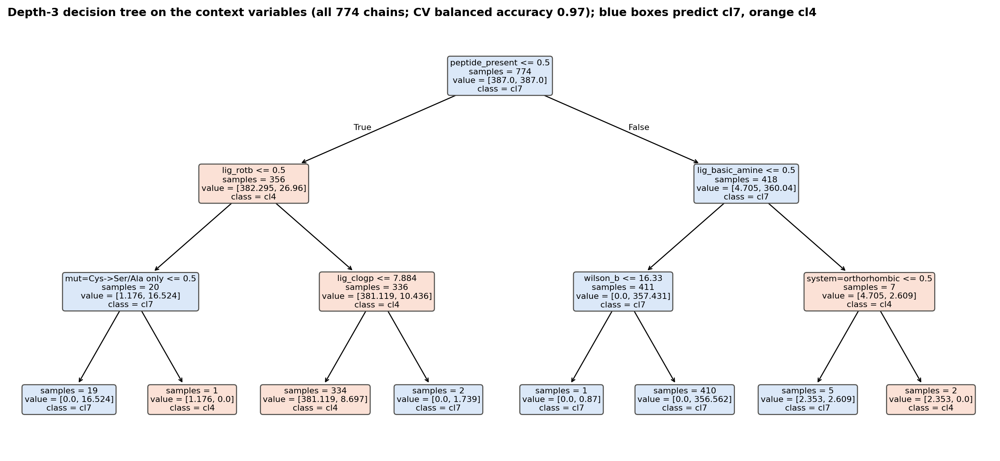
The first splits use the peptide / mutation and the ligand's basic amine, not quality variables.
Shows: depth-3 decision tree (class-balanced) on quality, crystal, construct and ligand variables | Data: results/ext/supervised_scores.csv | Script: scripts/ext_supervised.py
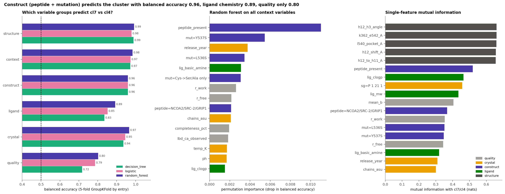
Quality variables predict the split less well (0.80; quality is confounded with construct and crystal form, see Y14/Y16); construct (0.96) and ligand chemistry (0.89) predict it well; top single feature h12_h3_angle (MI 0.66).
Shows: cross-validated balanced accuracy per feature group and model; permutation importance; mutual information | Data: results/ext/supervised_scores.csv, results/ext/feature_importance.csv | Script: scripts/ext_supervised.py
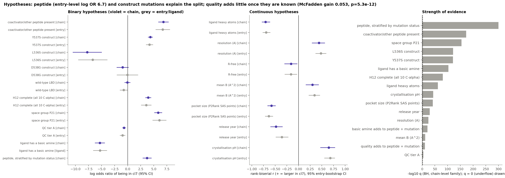
Peptide presence, Y537S/L536S constructs and the ligand basic amine have the largest effects; adding resolution/R-free/mean B to peptide+mutation gains McFadden R2 0.053 (LR p=5.3e-12).
Shows: forest plots of binary (log OR) and continuous (rank-biserial) hypotheses at chain and entry level; BH q | Data: results/ext/split_hypotheses.csv | Script: scripts/ext_split_hypotheses.py
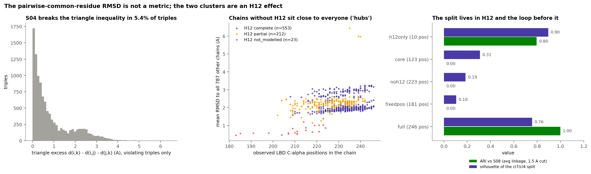
5.4% of triples violate the triangle inequality (max excess 6.5 A); without positions 528-550 the cl7/cl4 split nearly disappears (silhouette 0.19; the 1.5 A cut gives 1 cluster).
Shows: triangle-inequality excess, hubness of incomplete chains, split strength per position set | Data: results/ext/metric_check.csv | Script: scripts/ext_metric_check.py
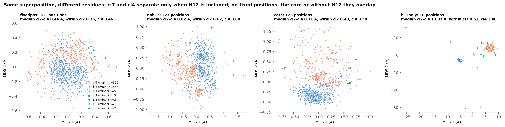
Median cl7-cl4 distance is 14.0 A on H12 alone but 0.82 A without H12/loop: the split is an H12 position split.
Shows: metric MDS of four region-restricted RMSD matrices coloured by S08 cluster | Data: results/ext/metric_check.csv, results/ext/rmsd_noh12.npy, results/ext/rmsd_h12only.npy | Script: scripts/ext_metric_check.py
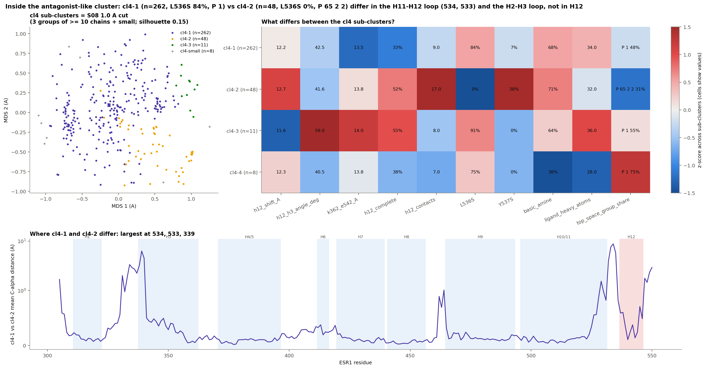
At 1.0 A cl4 splits into 262 + 48 chains (+ small groups); see the heatmap for which variables separate them.
Shows: MDS of the cl4 sub-matrix coloured by sub-cluster; feature heatmap per sub-cluster; per-residue profile between the two largest sub-clusters | Data: results/ext/cl4_subclusters.csv, results/ext/cl4_subcluster_summary.csv | Script: scripts/ext_cl4_substructure.py
D. Outliers and quality
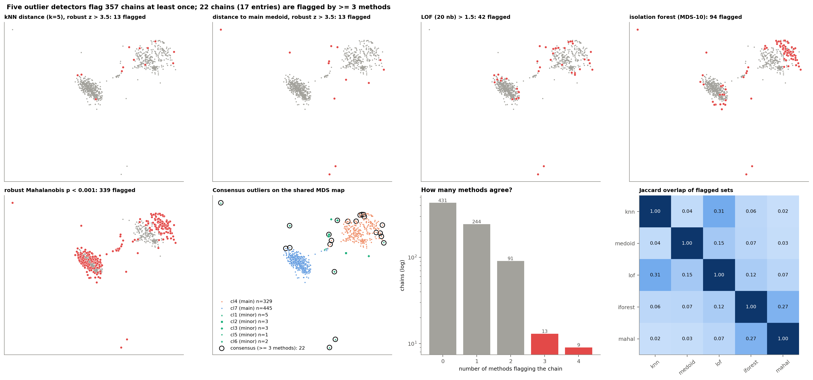
22 consensus outliers in 17 entries; 14 of them sit inside a main cluster, the rest are the minor clusters.
Shows: flags of five outlier methods on the shared MDS map, consensus, agreement counts and Jaccard overlap | Data: results/ext/outlier_flags.csv | Script: scripts/ext_outliers.py
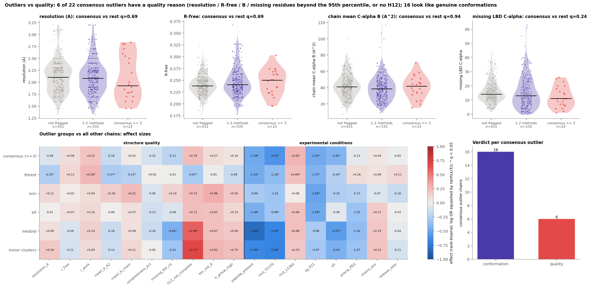
6/22 consensus outliers are explained by quality (or a missing H12), 16 are well-determined structures in an unusual conformation; see outlier_verdicts.csv.
Shows: quality metrics of consensus outliers vs the rest; effect-size heatmap for every outlier group and variable; verdict counts | Data: results/ext/outlier_tests.csv, results/ext/outlier_verdicts.csv | Script: scripts/ext_outlier_quality.py
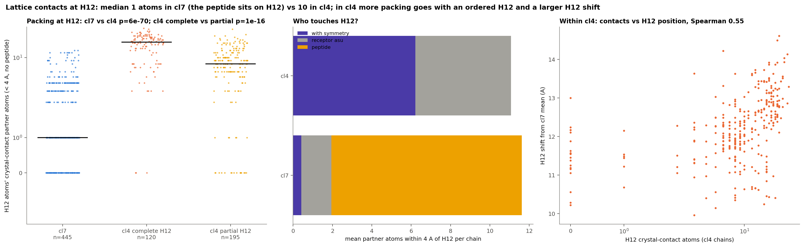
Median contact atoms cl7 1 vs cl4 10 (p=6e-70); partial-H12 cl4 chains have 8 vs 18 for complete (p=1e-16).
Shows: crystal-contact atoms around H12 (symmetry mates, other ASU chains, peptide) by cluster and H12 label; contacts vs H12 shift in cl4 | Data: results/ext/h12_crystal_contacts.csv | Script: scripts/ext_h12_contacts.py
E. Experimental metadata
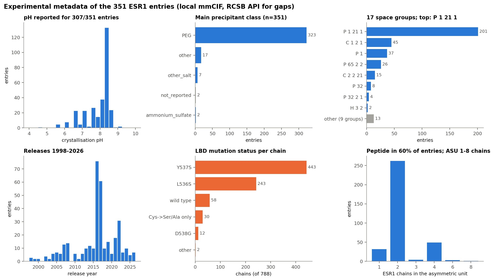
307/351 entries report a pH (median 8.3); 323 PEG-grown; most common space group P 1 21 1 (201 entries); coactivator/other peptide in 210 entries.
Shows: pH, precipitant class, space groups, release years, LBD mutation status, chains per ASU | Data: results/ext/entry_metadata.csv, results/ext/chain_metadata.csv | Script: scripts/ext_metadata.py
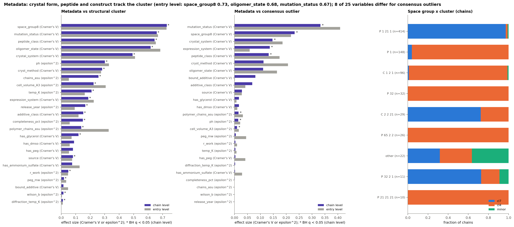
Strongest cluster associations at entry level: space_group8, oligomer_state, mutation_status; pH and precipitant class are weaker; all entries are X-ray structures.
Shows: effect size of every mmCIF metadata variable against cluster and consensus-outlier status (chain and entry level); space group x cluster | Data: results/ext/metadata_tests.csv | Script: scripts/ext_metadata_tests.py
F. Embeddings and colour-by
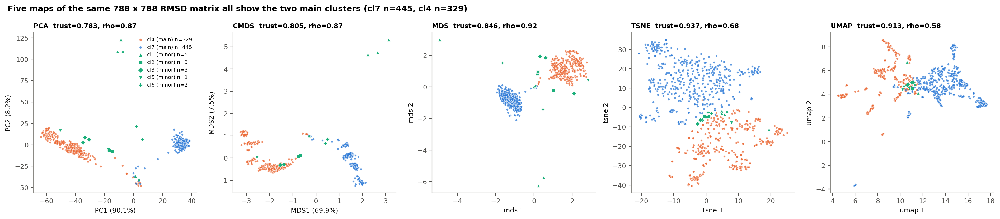
All five maps separate cl7 from cl4; classical MDS keeps 77% of the positive spectrum in 2-D; highest trustworthiness tsne (0.937).
Shows: PCA of RMSD rows, classical MDS, metric MDS, t-SNE and UMAP, coloured by S08 cluster | Data: results/ext/embedding_rmsd.csv, results/ext/embedding_quality.csv | Script: scripts/ext_embeddings.py
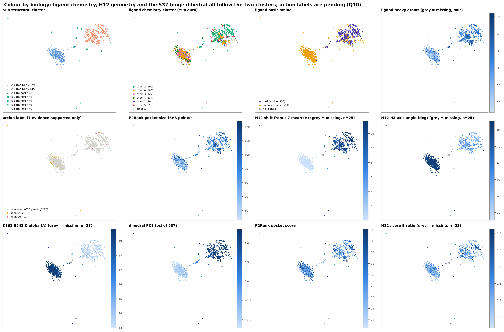
Basic-amine ligands, large ligands and large pockets sit in cl4; the H12 geometry variables change abruptly at the cluster border.
Shows: the same map coloured by ligand chemistry cluster, basic amine, ligand size, supported action label, pocket size, H12 geometry, 537 dihedral, H12/core B | Data: results/ext/colour_by_table.csv | Script: scripts/ext_colour_by.py
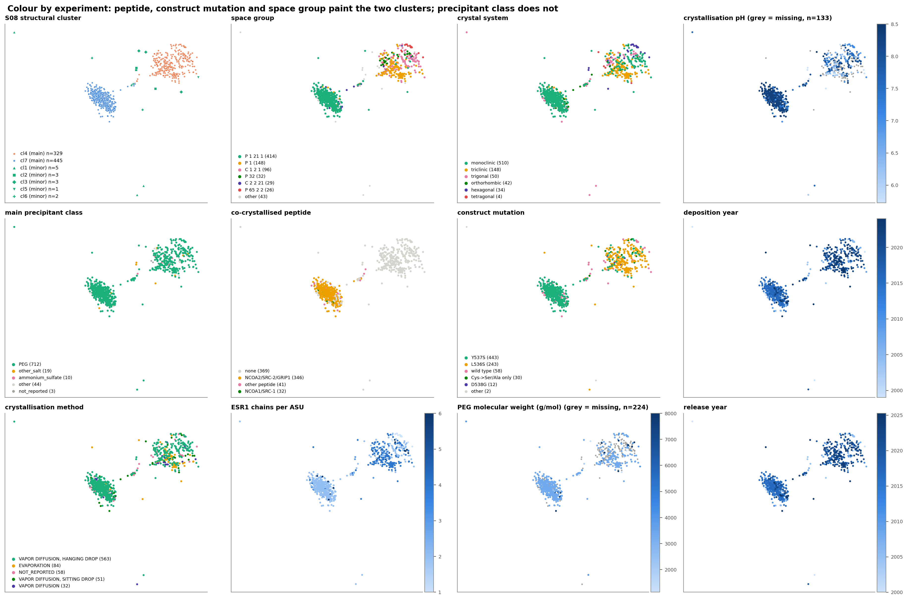
P21 / NCOA2 peptide / Y537S cover cl7; P1, C2, P3x and L536S cover cl4; PEG is everywhere (no signal).
Shows: the same map coloured by space group, crystal system, pH, precipitant, peptide, mutation, year, method, ASU, PEG size | Data: results/ext/colour_by_table.csv | Script: scripts/ext_colour_by.py
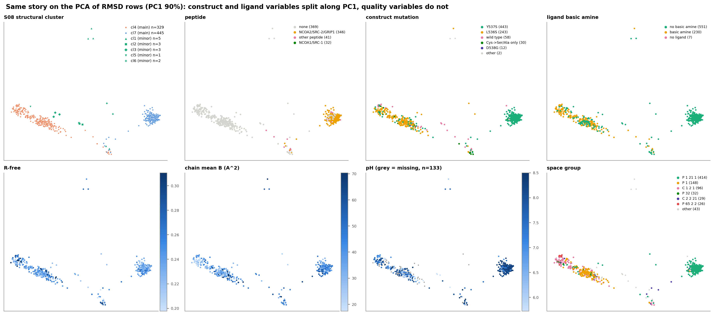
The PCA map reproduces the MDS picture: PC1 is the H12 state, set by construct and ligand, not by quality.
Shows: PCA (RMSD rows) map coloured by cluster, peptide, mutation, basic amine, R-free, B, pH, space group | Data: results/ext/colour_by_table.csv, results/ext/embedding_rmsd.csv | Script: scripts/ext_colour_by.py
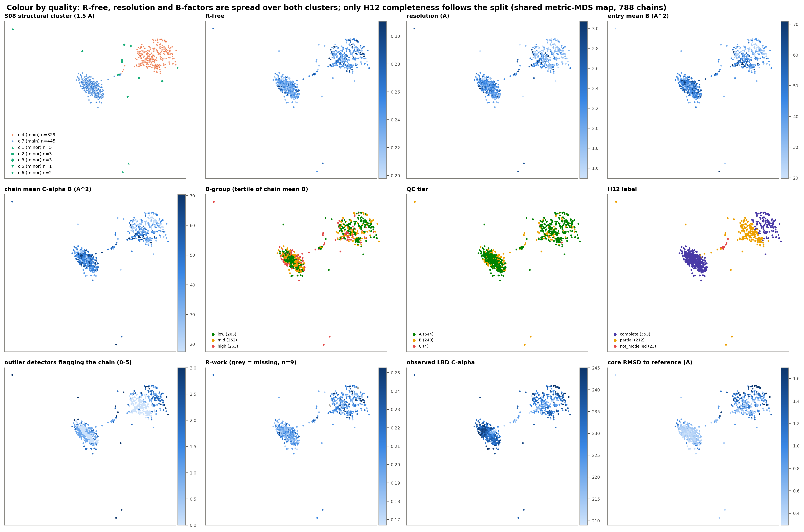
Quality variables are mixed across the map; cl4 even holds more high-resolution chains; H12 partial/not modelled concentrates in cl4.
Shows: metric-MDS map of the RMSD matrix coloured by cluster, R-free, resolution, B-factors, B-group, tier, H12 label, outlier count, R-work, completeness, core RMSD | Data: results/ext/colour_by_table.csv | Script: scripts/ext_colour_by.py
Open in a browser to look up any chain; the dropdown switches between MDS, PCA, t-SNE and UMAP.
G. Coordinate PCA
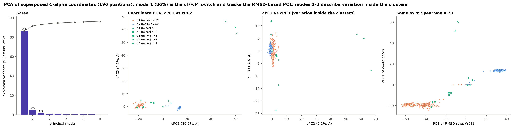
cPC1 explains 86% of coordinate variance and correlates with the RMSD-based PC1 (Spearman 0.78); distances in cPC1-3 space track S04 RMSD (Spearman 0.81).
Shows: scree plot, projections of all 788 chains on coordinate modes 1-3, cPC1 against PC1 of the RMSD rows | Data: results/ext/coord_pca_scores.csv, results/ext/coord_pca_variance.csv | Script: scripts/ext_coord_pca.py
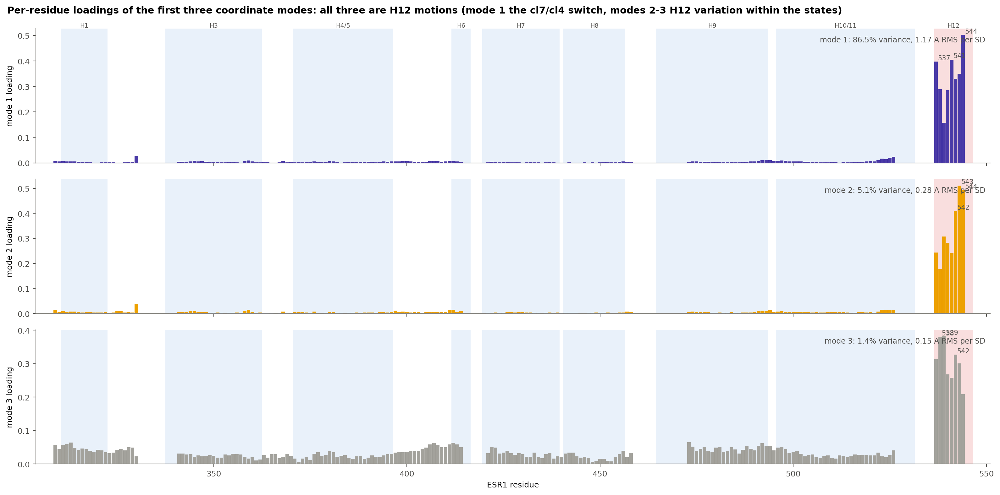
Modes 1-3 load almost only on H12 (538-544) and the 528-537 loop; the helical core has near-zero loading in every mode.
Shows: per-residue loading magnitude of coordinate modes 1-3 along the ESR1 sequence with helix bands | Data: results/ext/coord_pca_loadings.csv | Script: scripts/ext_coord_pca.py
H. B-factors and core
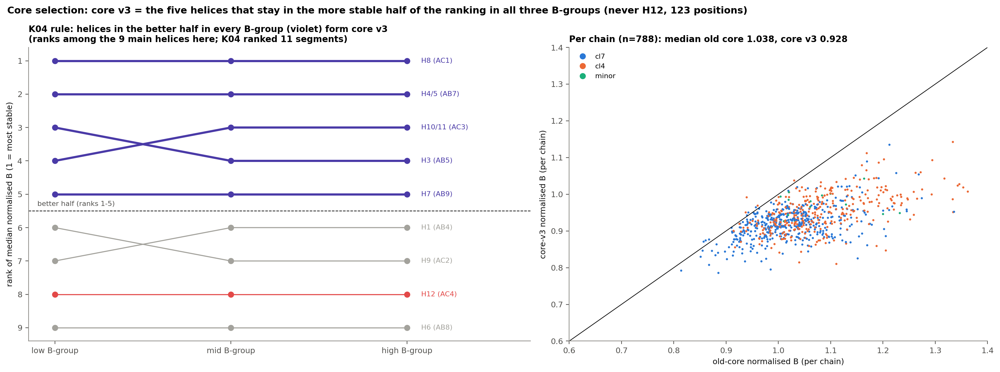
Core v3 helices (H3, H4/5, H7, H8, H10/11) stay in the better half in every B-group; per chain the core-v3 normalised B (median 0.928) is lower than on the old core (1.038).
Shows: rank of each helix by median normalised B in the low/mid/high B-groups (bump chart) and per-chain core B, core v3 vs old core | Data: results/ext/helix_b_summary.csv, results/ext/core_b_v3.csv | Script: scripts/ext_bfactors.py
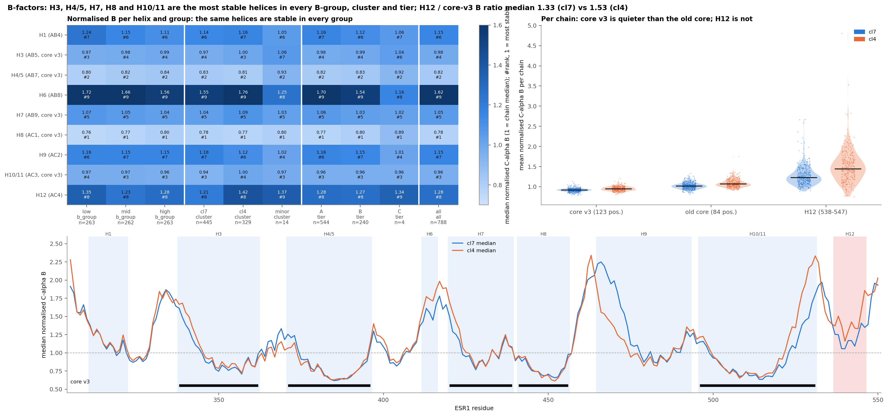
The helix ranking is stable across all groups; H12 is relatively more mobile in cl4 (H12/core-v3 ratio 1.53 vs 1.33 in cl7).
Shows: median normalised B per helix by B-group, cluster and tier (with ranks); per-chain core v3 / old core / H12 B by cluster; per-residue B profile cl7 vs cl4 | Data: results/ext/helix_b_summary.csv, results/ext/core_b_v3.csv, results/ext/bfactor_profile.csv | Script: scripts/ext_bfactors.py
I. ESR2 and ESR1 vs ESR2
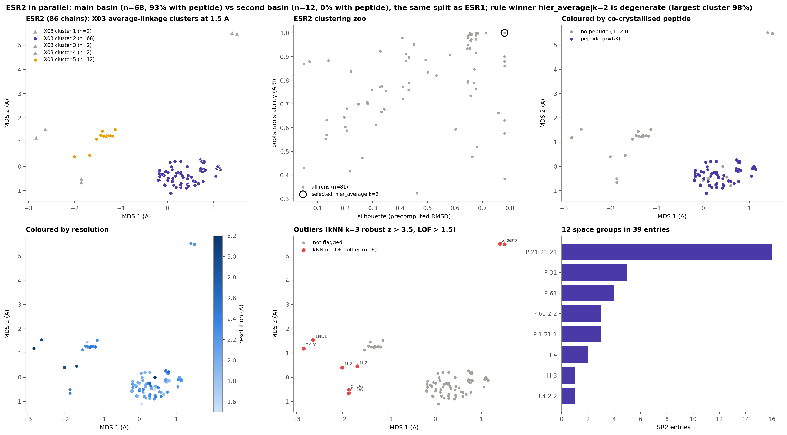
ESR2 shows the ESR1 pattern: the main basin (68 chains) is peptide-bound, the second (12) is not; 8 chains are kNN/LOF outliers; small N, descriptive only.
Shows: ESR2 metric-MDS map coloured by cluster, peptide, resolution, outliers; ESR2 clustering zoo; space groups | Data: results/ext/esr2_zoo_runs.csv, results/ext/esr2_metadata.csv, results/ext/esr2_chain_table.csv | Script: scripts/ext_esr2.py
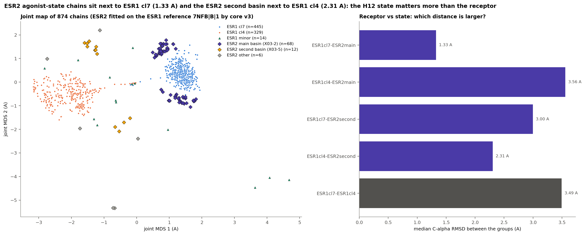
Same-state cross-receptor distances (1.33 / 2.31 A) are far below the ESR1 cl7-cl4 distance (3.49 A).
Shows: metric MDS of the joint 874 x 874 ESR1+ESR2 RMSD matrix; median RMSD between receptor/state groups | Data: results/ext/rmsd_joint.npy, results/ext/joint_embedding.csv | Script: scripts/ext_joint_esr1_esr2.py
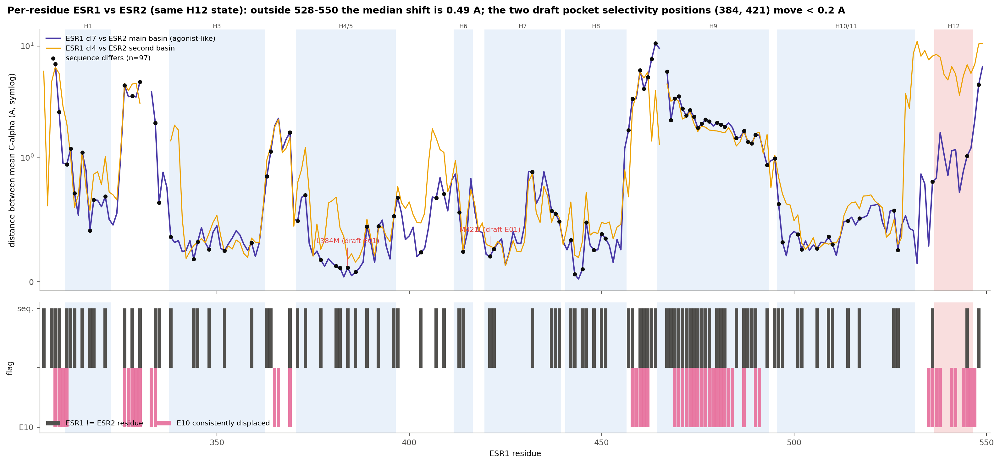
Backbone differences between the receptors are small in the core and concentrate in loops; the pocket selectivity residues differ in side chain (L384M, M421I), not in backbone position.
Shows: per-position distance between ESR1 and ESR2 mean C-alpha traces in the same H12 state, sequence differences, draft selectivity residues, E10 positions | Data: results/ext/receptor_residue_diff.csv | Script: scripts/ext_joint_esr1_esr2.py
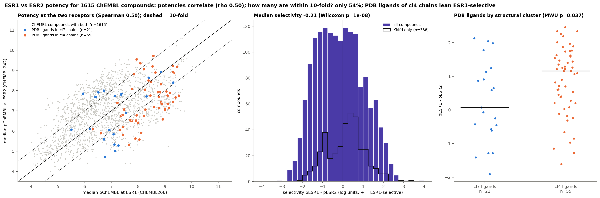
54% of 1615 compounds are within 10-fold between receptors; 295 are >10-fold ESR1-selective and 441 >10-fold ESR2-selective.
Shows: median pChEMBL at ESR1 vs ESR2 per compound, selectivity distribution (all assays and Ki/Kd only), selectivity of PDB ligands by structural cluster | Data: results/ext/selectivity_ratios.csv, results/ext/selectivity_tests.csv, results/ext/chembl_esr2_activities.csv | Script: scripts/ext_selectivity.py
J. Ligand and conformation
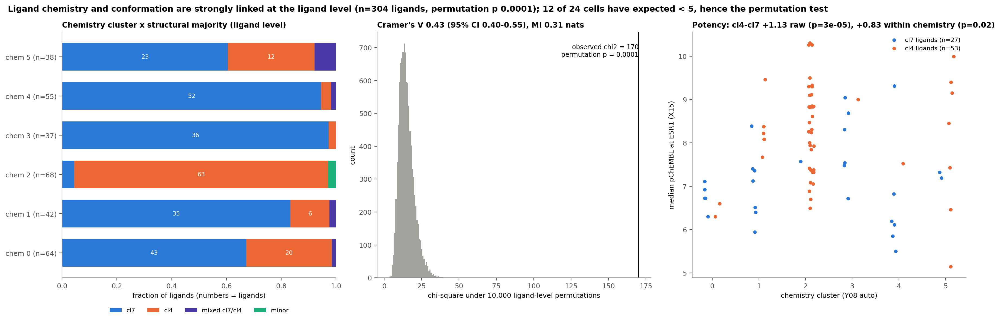
Cramer's V 0.43 (CI 0.40-0.55); the cl4-cl7 potency gap is +1.13 log units raw and +0.83 within chemistry clusters.
Shows: chem cluster x structural majority (ligand level), permutation null of the chi-square, potency by cluster within chemistry clusters | Data: results/ext/chem_struct_link.csv, results/ext/chem_struct_contingency.csv | Script: scripts/ext_chem_struct_link.py
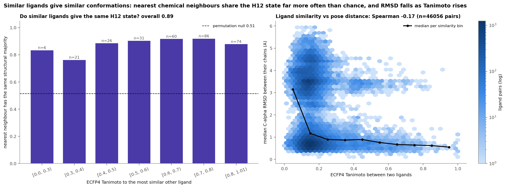
89% of ligands share the H12 state of their nearest chemical neighbour (null 51%); Spearman Tanimoto vs RMSD -0.17.
Shows: nearest-neighbour agreement of structural majority by Tanimoto bin; hexbin of ligand-pair Tanimoto vs median inter-chain RMSD | Data: results/ext/nn_agreement.csv, results/ext/chem_struct_link.csv | Script: scripts/ext_chem_struct_link.py
K. Redundancy and diversity
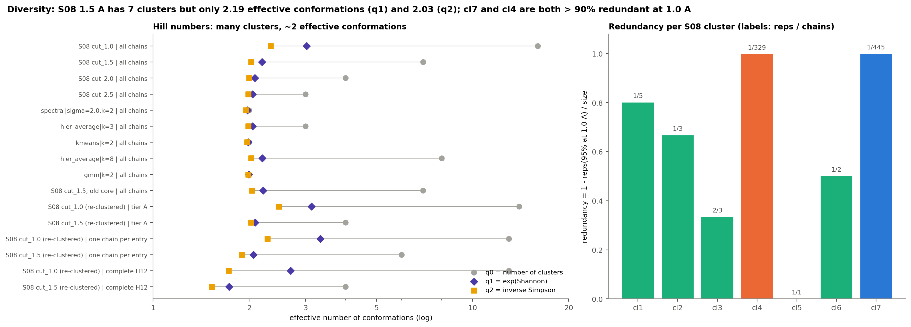
Whatever the method or subset, q1 stays near 2.2: the set holds about two conformations; q0 depends on how many singletons a method makes.
Shows: Hill numbers q0/q1/q2 across partitions, methods, cores and subsets; redundancy per S08 cluster | Data: results/ext/hill_numbers.csv, results/ext/redundancy_by_cluster.csv | Script: scripts/ext_redundancy.py
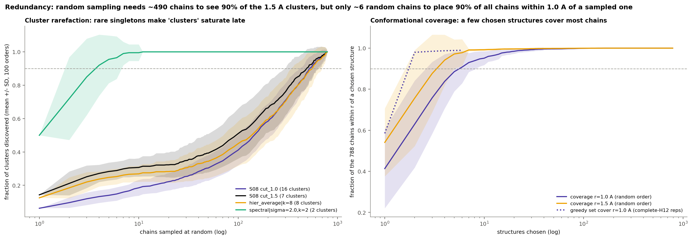
Cluster counts are driven by rare singletons (n90 ~490 chains at 1.5 A), while coverage of the chains saturates fast (90% within 1.0 A after ~6 random chains).
Shows: rarefaction of cluster discovery for four partitions and of conformational coverage at 1.0 / 1.5 A | Data: results/ext/rarefaction.csv, results/ext/representatives_ext.csv | Script: scripts/ext_redundancy.py
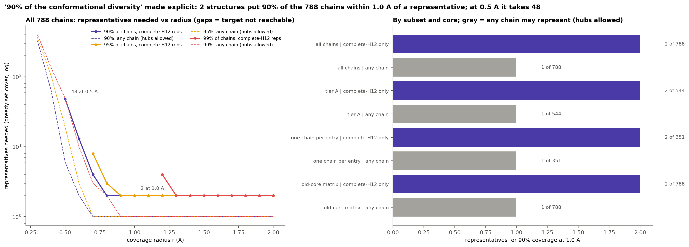
2 complete-H12 representatives cover 90% of all chains at 1.0 A and 2 at 1.5 A; the result barely changes for tier A, one-chain-per-entry or the old core.
Shows: greedy set-cover size by radius and coverage target; 90% at 1.0 A by subset, core and representative rule | Data: results/ext/set_cover.csv, results/ext/representatives_ext.csv | Script: scripts/ext_redundancy.py
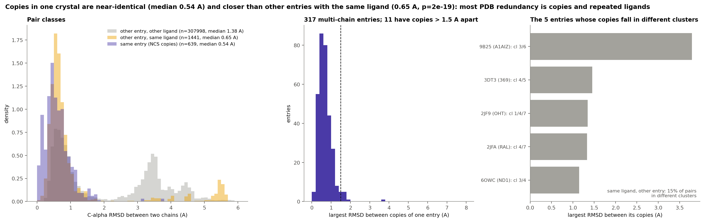
NCS copies median 0.54 A, same ligand other entry 0.65 A, other ligand 1.38 A; 5 of 317 multi-chain entries are split across clusters.
Shows: RMSD distributions for chain pairs from the same entry, other entries with the same ligand, other ligands; largest within-entry RMSD; entries with copies in different clusters | Data: results/ext/ncs_copies.csv, results/ext/ncs_pair_classes.csv | Script: scripts/ext_ncs_copies.py
L. Time
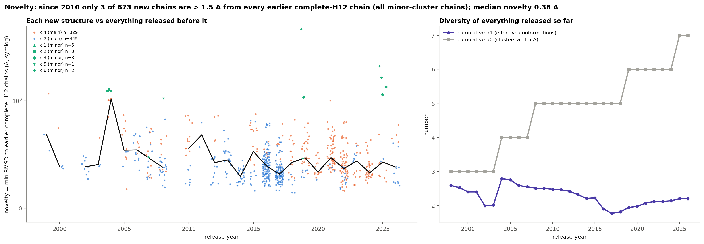
New structures since 2010 almost always repeat a known conformation (median novelty 0.38 A); the effective number of conformations has been ~2 since both states appeared.
Shows: novelty of each chain (min RMSD to earlier-released chains) by release year; cumulative Hill q0/q1 over time | Data: results/ext/time_trends.csv, results/ext/novelty_by_chain.csv | Script: scripts/ext_time.py
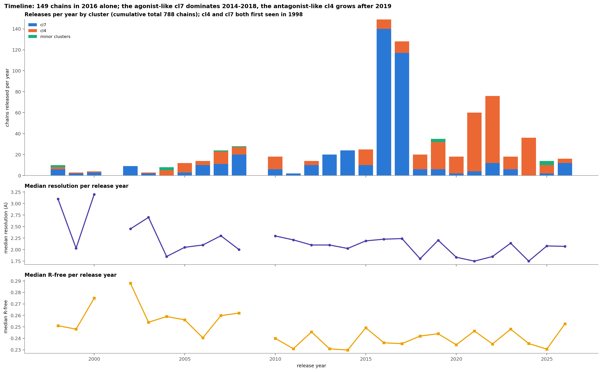
cl4 appears in 1998 and cl7 in 1998; the peak year 2016 (149 chains) is mostly cl7.
Shows: chains released per year stacked by cluster with cumulative count; median resolution and R-free per year | Data: results/ext/time_trends.csv | Script: scripts/ext_time.py
M. Robustness
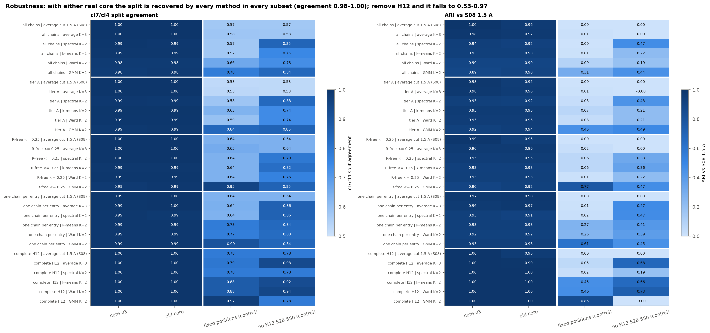
Main-split agreement 0.98-1.00 for every method/subset on core v3 and the old core; the H12-free controls drop to 0.53-0.97.
Shows: heatmaps of main-split agreement and ARI vs S08 for 6 methods x 4 matrices (2 cores + 2 negative controls) x 5 subsets | Data: results/ext/robustness_grid.csv | Script: scripts/ext_robustness.py
N. Structure images
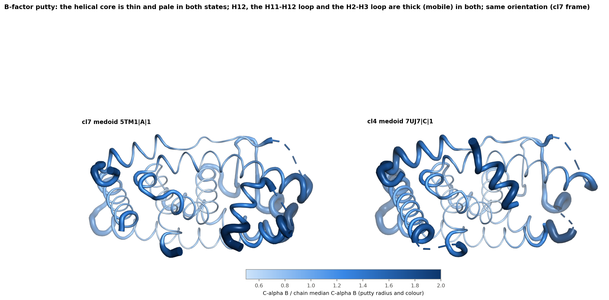
Mobility concentrates in H12 and the loops that also carry the cl7/cl4 difference.
Shows: PyMOL B-factor putty of both complete-H12 medoids (normalised C-alpha B) | Data: results/lbd_extract/residue_mapping.csv | Script: scripts/ext_pymol_renders.py
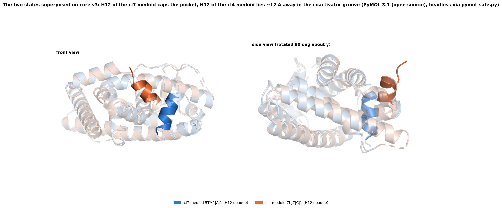
Everything except H12 (and two loops) overlays; H12 occupies two different positions.
Shows: PyMOL cartoon of the complete-H12 medoids of cl7 and cl4 in the S03 frame, H12 opaque, two views | Data: results/ext/cluster_displacement_profile.csv, results/alignment/alignment_transforms.json | Script: scripts/ext_pymol_renders.py
Earlier figures (September report and tracker tasks)
246 positions x 135 pairs, sequential blue clipped at 5 A, grey = unobserved; core v3 and H12 strip; table twin results/displacement_matrix.csv
Shows: 246 positions x 135 pairs, sequential blue clipped at 5 A, grey = unobserved; core v3 and H12 strip; table twin results/displacement_matrix.csv | Data: (see task) | Script:
rendered headless with open-source PyMOL 3.1.0 (conda-forge env C:/Users/duise/anaconda3/envs/pymol); 7 S12 medoids on saved S03 transforms, H12 538-547 red (2QE4|B|1 has no modelled H12); 1400x1050
Shows: rendered headless with open-source PyMOL 3.1.0 (conda-forge env C:/Users/duise/anaconda3/envs/pymol); 7 S12 medoids on saved S03 transforms, H12 538-547 red (2QE4|B|1 has no modelled H12); 1400x1050 | Data: (see task) | Script:
rendered with open-source PyMOL 3.1.0; 5TM1|A|1 coloured by E07 median ESR2-vs-ESR1 displacement (219 positions with a value), blue_white_red 0-3 A, grey = no value
Shows: rendered with open-source PyMOL 3.1.0; 5TM1|A|1 coloured by E07 median ESR2-vs-ESR1 displacement (219 positions with a value), blue_white_red 0-3 A, grey = no value | Data: (see task) | Script:
recommended core AB5 338-362, AB7 371-396, AB9 420-439, AC1 441-456, AC3 496-531 = 123 residues; differs from current 84-residue core. H12/core median ratio 1.255 (not 12x); raw and normalised ratios identical by constru
Shows: recommended core AB5 338-362, AB7 371-396, AB9 420-439, AC1 441-456, AC3 496-531 = 123 residues; differs from current 84-residue core. H12/core median ratio 1.255 (not 12x); raw and normalised ratios identical by constru | Data: (see task) | Script:
Sep matrix loaded; average linkage reproduces Sep 1.5A groups 212,124,6,2,2,2,1,1,1 (ARI 1.0). Clusters 18/9/5/4 at 1.0/1.5/2.0/2.5A; entropy 2.000/1.270/1.135/1.022 bits
Shows: Sep matrix loaded; average linkage reproduces Sep 1.5A groups 212,124,6,2,2,2,1,1,1 (ARI 1.0). Clusters 18/9/5/4 at 1.0/1.5/2.0/2.5A; entropy 2.000/1.270/1.135/1.022 bits | Data: (see task) | Script:
100 random orderings, seed 42. n_90 = 293 (1.0A, total 18), 275 (1.5A, 9), 217 (2.0A, 5), 241 (2.5A, 4)
Shows: 100 random orderings, seed 42. n_90 = 293 (1.0A, total 18), 275 (1.5A, 9), 217 (2.0A, 5), 241 (2.5A, 4) | Data: (see task) | Script:
Shows: (see tracker log) | Data: (see task) | Script:
per-entry Mann-Whitney, rare = cluster < 10 chains; at 1.5 A 7 rare vs 344 common entries: resolution median 2.40 vs 2.10 A (p 0.21), R-free 0.236 vs 0.238 (p 0.75); no cut reaches p<0.05 (lowest 0.061 resolution at 2.5
Shows: per-entry Mann-Whitney, rare = cluster < 10 chains; at 1.5 A 7 rare vs 344 common entries: resolution median 2.40 vs 2.10 A (p 0.21), R-free 0.236 vs 0.238 (p 0.75); no cut reaches p<0.05 (lowest 0.061 resolution at 2.5 | Data: (see task) | Script:
4 cuts, mean +/- 1 SD band, dashed 90% line, n_90 markers; table twins results/diversity_curve.csv, results/saturation.csv
Shows: 4 cuts, mean +/- 1 SD band, dashed 90% line, n_90 markers; table twins results/diversity_curve.csv, results/saturation.csv | Data: (see task) | Script:
788 leaves (351 entries), cut 1.5 A = 7 clusters; static PNG, table twin results/entry_clusters.csv
Shows: 788 leaves (351 entries), cut 1.5 A = 7 clusters; static PNG, table twin results/entry_clusters.csv | Data: (see task) | Script:
788 chains, sweep 1.0-2.5 A every 0.05 A from S08 linkage; reported cuts match cluster_stats.csv (16/7/4/3; top-3 share 95.4-100%)
Shows: 788 chains, sweep 1.0-2.5 A every 0.05 A from S08 linkage; reported cuts match cluster_stats.csv (16/7/4/3; top-3 share 95.4-100%) | Data: (see task) | Script:
Project-defined LBD/core/H12 ranges; 84 configured core positions. The provisional regional H12* 536–545 interval is a distinct annotation, not this configured 538–547 window.
Shows: Project-defined LBD/core/H12 ranges; 84 configured core positions. The provisional regional H12* 536–545 interval is a distinct annotation, not this configured 538–547 window. | Data: (see task) | Script: esr_analysis/report_figures/core_windows.py
487 full master entries; 901 verified ESR1 chain/models and 788 eligible copies. Fragment entries remain in the master. Context categories overlap and are not summed as attrition.
Shows: 487 full master entries; 901 verified ESR1 chain/models and 788 eligible copies. Fragment entries remain in the master. Context categories overlap and are not summed as attrition. | Data: (see task) | Script: esr_analysis/report_figures/inventory.py
Selected one-chain-per-entry cohort; pass requires all three known metrics at or below the configured cutoffs. Fail takes precedence over missing data. Counts are metadata QC, not evidence of biological stability.
Shows: Selected one-chain-per-entry cohort; pass requires all three known metrics at or below the configured cutoffs. Fail takes precedence over missing data. Counts are metadata QC, not evidence of biological stability. | Data: (see task) | Script: esr_analysis/report_figures/quality.py
Full canonical-isomeric-SMILES identity, without salt/charge/tautomer/stereochemical merging. Only source-supported exact-compound receptor-context actions count; unknowns are not inferred from generic activity or scaffo
Shows: Full canonical-isomeric-SMILES identity, without salt/charge/tautomer/stereochemical merging. Only source-supported exact-compound receptor-context actions count; unknowns are not inferred from generic activity or scaffo | Data: (see task) | Script: esr_analysis/report_figures/identity_action.py
Full original 7NFB image and caption, not a substituted selected complex: selected receptor blue, other polymers grey, peptides orange and GEN green across receptor copies. No LaTeX crop applied. Offline route reuses thi
Shows: Full original 7NFB image and caption, not a substituted selected complex: selected receptor blue, other polymers grey, peptides orange and GEN green across receptor copies. No LaTeX crop applied. Offline route reuses thi | Data: (see task) | Script: esr_analysis/report_figures/reference_context.py
Three actual coordinate stages from the saved whole-chain conserved-core transform; centering alone is not alignment. Atom correspondence is canonical/native mapping, not residue-index order or a new pairwise refit.
Shows: Three actual coordinate stages from the saved whole-chain conserved-core transform; centering alone is not alignment. Atom correspondence is canonical/native mapping, not residue-index order or a new pairwise refit. | Data: (see task) | Script: esr_analysis/report_figures/alignment.py
Symmetric indexed 351-entry matrix; diagonal excluded from the pair histogram. Shared observed LBD positions measured after the saved reference-core fit, without fitting pairs again. Sorting uses original baseline labels
Shows: Symmetric indexed 351-entry matrix; diagonal excluded from the pair histogram. Shared observed LBD positions measured after the saved reference-core fit, without fitting pairs again. Sorting uses original baseline labels | Data: (see task) | Script: esr_analysis/report_figures/distances.py
QC-pass overlay retains membership in existing baseline groups. It is not independent QC reclustering or a new partition. Original labels and all nine groups remain unchanged.
Shows: QC-pass overlay retains membership in existing baseline groups. It is not independent QC reclustering or a new partition. Original labels and all nine groups remain unchanged. | Data: (see task) | Script: esr_analysis/report_figures/group_counts.py
Unscaled RMSD-row PCA, n=351 selected entries. Both panels use identical saved PC1/PC2 values, preserved display signs and shared limits. QC labels do not refit the embedding. PCA is descriptive geometry, not an independ
Shows: Unscaled RMSD-row PCA, n=351 selected entries. Both panels use identical saved PC1/PC2 values, preserved display signs and shared limits. QC labels do not refit the embedding. PCA is descriptive geometry, not an independ | Data: (see task) | Script: esr_analysis/report_figures/landscape.py
Valid observed LBD CA B>=0; population SD ddof=0 within the same selected chain. At least 80% valid regional coverage. Full and QC-pass summaries have explicit chain counts in the saved table. Provisional transferred bou
Shows: Valid observed LBD CA B>=0; population SD ddof=0 within the same selected chain. At least 80% valid regional coverage. Full and QC-pass summaries have explicit chain counts in the saved table. Provisional transferred bou | Data: (see task) | Script: esr_analysis/report_figures/regional_B.py
One experimental chain per entry in the saved core-reference frame; reference first replaces its same-entry selection. Population RMSF uses per-position available observations, with missing positions retained. Experiment
Shows: One experimental chain per entry in the saved core-reference frame; reference first replaces its same-entry selection. Population RMSF uses per-position available observations, with missing positions retained. Experiment | Data: (see task) | Script: esr_analysis/report_figures/rmsf_coverage.py
86 ESR2 chains, block-12 PCA of RMSD rows; PC1 81.9%, PC2 13.0%; coloured by X03 cluster (ESR2 ligand classes not labelled in repo); main basin 68 chains, second 12; 1 entry (2 chains) far out at PC1 ~40
Shows: 86 ESR2 chains, block-12 PCA of RMSD rows; PC1 81.9%, PC2 13.0%; coloured by X03 cluster (ESR2 ligand classes not labelled in repo); main basin 68 chains, second 12; 1 entry (2 chains) far out at PC1 ~40 | Data: (see task) | Script:
PCA of 6 z-scored top-pocket descriptors over 788 chains: PC1 65.6% (pocket size: sas_points, surf_atoms, n_residues), PC2 19.2% (score/probability). Coloured by S08 cluster since ligand-class labels (Q10) do not exist;
Shows: PCA of 6 z-scored top-pocket descriptors over 788 chains: PC1 65.6% (pocket size: sas_points, surf_atoms, n_residues), PC2 19.2% (score/probability). Coloured by S08 cluster since ligand-class labels (Q10) do not exist; | Data: (see task) | Script:
82 PDB ligands with ChEMBL potency (median pChEMBL, IC50/Ki/Kd '='), unit = ligand assigned to the cluster holding most of its chains at 1.5 A: cluster 4 n=53, 7 n=27, 1 and 2 n=1; log nM axis, medians marked
Shows: 82 PDB ligands with ChEMBL potency (median pChEMBL, IC50/Ki/Kd '='), unit = ligand assigned to the cluster holding most of its chains at 1.5 A: cluster 4 n=53, 7 n=27, 1 and 2 n=1; log nM axis, medians marked | Data: (see task) | Script: